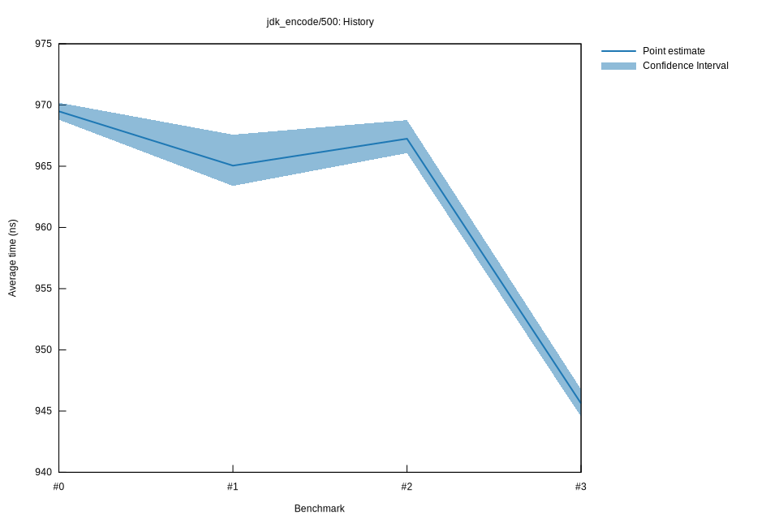

# 32022-10-16T19:55:32+03:00
|
Lower Bound |
Estimate |
Upper Bound |
| Value: |
944.54ns |
945.62ns |
946.77ns |
| Throughput: |
505.84MiB/s |
505.27MiB/s |
504.65MiB/s |
| Change in Value: |
-2.5654% |
-2.3108% |
-2.0718% |
| Change in Throughput: |
+2.6329% |
+2.3654% |
+2.1157% |
No change in performance detected.
# 22022-10-16T17:17:28+03:00
|
Lower Bound |
Estimate |
Upper Bound |
| Value: |
966.07ns |
967.25ns |
968.77ns |
| Throughput: |
494.57MiB/s |
493.97MiB/s |
493.20MiB/s |
| Change in Value: |
+0.3141% |
+0.5243% |
+0.7422% |
| Change in Throughput: |
-0.3131% |
-0.5215% |
-0.7367% |
No change in performance detected.
# 12022-10-15T17:12:12+03:00
|
Lower Bound |
Estimate |
Upper Bound |
| Value: |
963.39ns |
965.05ns |
967.58ns |
| Throughput: |
495.95MiB/s |
495.10MiB/s |
493.80MiB/s |
| Change in Value: |
-0.8894% |
-0.6126% |
-0.3734% |
| Change in Throughput: |
+0.8974% |
+0.6164% |
+0.3748% |
No change in performance detected.
# 02022-10-15T16:47:48+03:00
|
Lower Bound |
Estimate |
Upper Bound |
| Value: |
968.80ns |
969.48ns |
970.19ns |
| Throughput: |
493.18MiB/s |
492.83MiB/s |
492.47MiB/s |